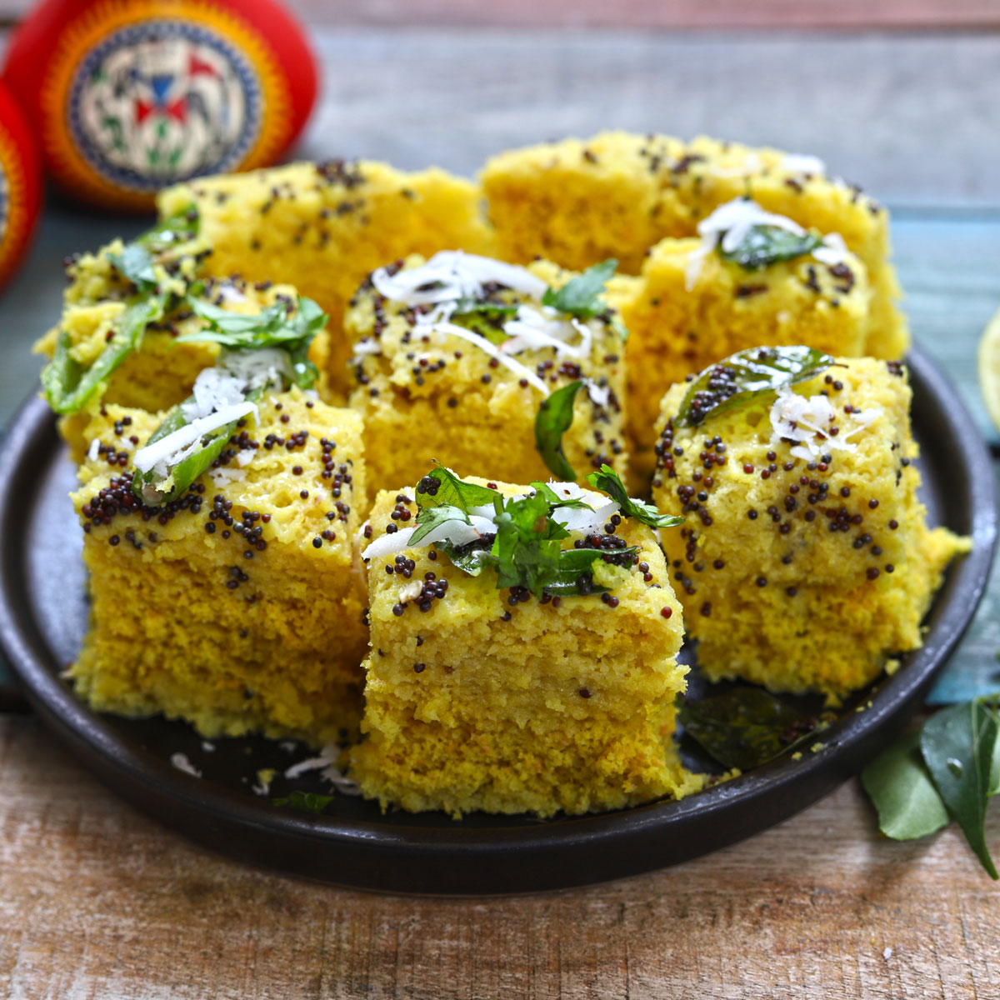
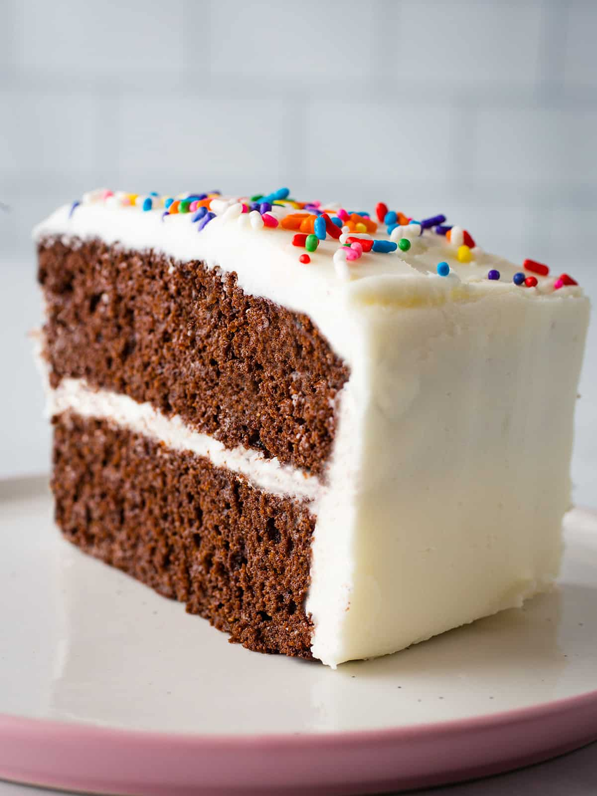
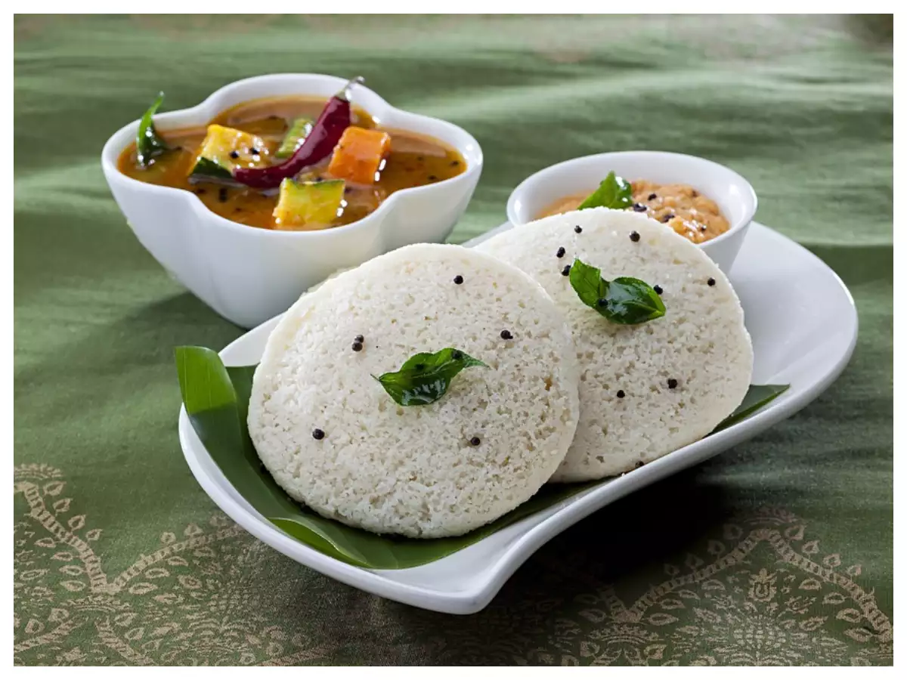

SHAHI BARFI
Ingredients
- 2 cups full-fat milk powder
- 1/2 cup condensed milk
- 1/2 cup milk
- 1/4 cup ghee (clarified butter)
- 1/2 teaspoon cardamom powder
- Chopped nuts for garnish (e.g., almonds, pistachios)
Recipe
- Prepare the Pan: Grease a square or rectangular pan with ghee or line it with parchment paper. This will make it easier to remove the Burfi later.
- Mix Milk Powder and Condensed Milk: In a mixing bowl, combine the milk powder and condensed milk. Mix them well to form a crumbly mixture.
- Prepare Saffron Milk (Optional): If you're using saffron, warm the milk slightly and add the saffron strands to it.
- Make Burfi Mixture: Heat ghee in a non-stick pan over medium-low heat. Once the ghee melts, add the milk powder and condensed milk mixture to the pan.
- Transfer to the Pan: Once the mixture thickens and forms a soft dough-like consistency, transfer it to the greased pan.
- Flatten and Garnish: Use a greased spatula or the back of a spoon to flatten and smooth the surface of the Burfi in the pan.
- Serve: Your Milk Burfi is ready to be enjoyed! Store any leftovers in an airtight container.

GULAB JAMUN
Ingredients
- 1 cup milk powder
- 1/4 cup all-purpose flour
- 1/4 cup ghee (clarified butter)
- A pinch of baking soda
- 2-3 tbsp milk (approx.)
- A few saffron strands (optional)
- Oil or ghee for frying
- 1.5 cups granulated sugar
- 1.5 cups water
- 1/2 tsp cardamom powder
- 1 tsp rose water (optional)
Recipe
- Mix milk powder, flour, ghee, and baking soda. Add milk gradually to make a smooth, slightly sticky dough.
- Shape the dough into crack-free balls.
- Fry the balls in hot oil or ghee until golden brown.
- In a separate pan, make sugar syrup by boiling sugar and water. Add cardamom and saffron.
- Soak the fried balls in the warm sugar syrup for 1-2 hours until they become soft and spongy.
- Optionally, garnish with chopped nuts or silver leaf before serving.

DHOKLA
Ingredients
- 1 cup besan (gram flour)
- 1/4 cup suji (semolina)
- 1/4 cup yogurt (curd)
- 1/2 tsp turmeric powder
- 1 tsp ginger-green chili paste
- 1 tsp Eno fruit salt (or 1/2 tsp baking soda)
- Salt to taste
- 1 tbsp oil
- 1 tsp mustard seeds
- 8-10 curry leaves
- A pinch of asafoetida (hing)
- 2 tbsp chopped coriander leaves
- 2 tbsp grated coconut (optional)
- Juice of 1 lemon
Recipe
- Prepare a steamer and grease a plate.
- Mix besan, suji, yogurt, water, turmeric powder, ginger-green chili paste, and salt to make a batter.
- Just before steaming, add Eno fruit salt (or baking soda) to the batter. Mix it, and the batter will become frothy.
- Pour the batter into the greased plate and steam for 15-20 minutes until a toothpick comes out clean.
- Heat oil in a pan, add mustard seeds, cumin seeds, curry leaves, green chilies, and asafoetida. Sauté for a minute.
- Pour this tempering over the steamed Dhokla.
- Garnish with coriander leaves and grated coconut (if using). Squeeze lemon juice on top.
- Serve warm with chutney.
- Enjoy your Dhokla as a delicious snack or breakfast dish!

CAKE
Ingredients
- 2 1/2 cups all-purpose flourr
- 2 1/2 tsp baking powder
- 1/2 tsp baking soda
- 1/2 tsp salt
- 1/2 cup softened unsalted butter
- 1 1/2 cups granulated sugar
- 3 large eggs
- 2 tsp vanilla extract
- 1 1/2 cups buttermilk
- 1 cup softened unsalted butter
- 4 cups powdered sugar
- 2 tsp vanilla extract
- 2-4 tbsp milk or cream (as needed for consistency)
- Food coloring (optional)
Recipe
- Preheat oven to 350°F (175°C). Grease and flour two 9-inch round cake pans.
- In a bowl, mix flour, baking powder, baking soda, and salt.
- Cream butter and sugar until fluffy. Add eggs one at a time, then add vanilla.
- Alternate adding dry ingredients and buttermilk to the wet mixture, starting and ending with dry ingredients.
- Divide batter between pans, bake for 25-30 minutes until a toothpick comes out clean.
- For frosting, beat butter, then gradually add powdered sugar. Add vanilla and milk/cream until it's creamy.
- Frost and decorate your cooled cakes as desired.
- Enjoy your homemade vanilla cake!

MASALA DOSA
Ingredients
- 1 cup rice
- 1/4 cup urad dal (split black gram)
- A pinch of fenugreek seeds
- A pinch of fenugreek seeds
- Water (for soaking)
- Salt (to taste)
- Oil or ghee (clarified butter) for greasing the pan
Recipe
- Prepare the Dosa Batter: Wash the rice, urad dal, and fenugreek seeds together and soak them in water for at least 4-6 hours or overnight.
- Grind the Batter: Drain the soaked ingredients and grind them into a smooth batter using a little water. The batter should be of pouring consistency, neither too thick nor too thin..
- Ferment the Batter: Transfer the batter to a large bowl, add salt, and mix well. Cover the bowl and let it ferment in a warm place for 6-8 hours or overnight.
- Make Dosas: Heat a non-stick or cast-iron skillet (tava) on medium-high heat. Grease it lightly with oil or ghee. Pour a ladleful of dosa batter onto the center of the skillet.
- Serve Hot: Remove the dosa from the skillet and serve it hot with your choice of chutney or sambar.
SOUTH IDLI
Ingredients
- 2 cups idli rice (or regular rice)
- 1 cup urad dal (split black gram)
- A pinch of fenugreek seeds
- Water (for soaking)
- Salt (to taste)
- Oil or ghee (clarified butter) for greasing the idli molds
Recipe
- Prepare the Idli Batter: Wash the rice, urad dal, and fenugreek seeds together and soak them in water for at least 4-6 hours or overnight.
- Grind the Batter: Drain the soaked ingredients and grind them into a smooth batter using a little water. The batter should be thick but pourable.
- Ferment the Batter: Mix salt into the ground batter. Cover the bowl and let it ferment in a warm place for 6-8 hours or overnight until it rises and becomes slightly sour.
- Steam the Idlis: Grease idli molds with oil or ghee. Pour batter into molds, filling them two-thirds full. Steam for 10-12 minutes until a toothpick comes out clean.
- Serve Hot: Remove the idlis from the molds using a spoon and serve them hot with your choice of chutney, sambar, or a side of coconut chutney.
